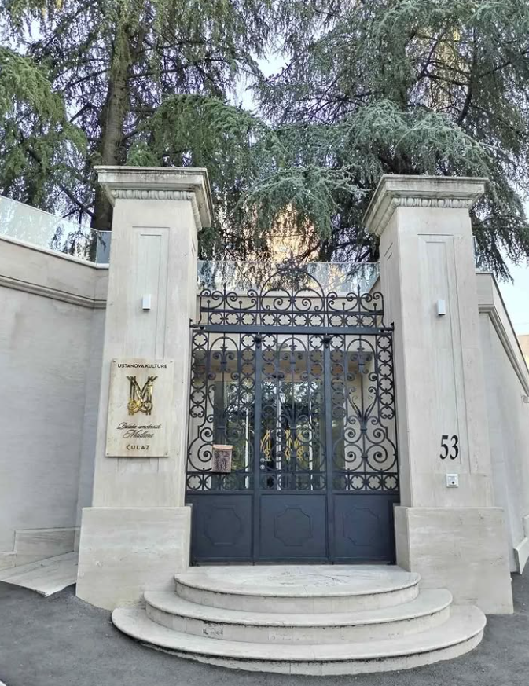

Stručnost u mermeru i kamenu
Duboko poznavanje mermera, granita, kvarca i prirodnog kamena za estetske i konstruktivne primene.
O nama
Ključni kamen je osnovan sa jasnom vizijom: spojiti arhitektonsku eleganciju sa vrhunskim majstorstvom obrade kamena. Kreiramo premium elemente od mermera i prirodnog kamena za stambene objekte, hotele i komercijalne prostore gde su materijali, detalji i završna obrada od presudnog značaja.
Svaki projekat započinje slušanjem klijenta, razumevanjem dizajna prostora i pretvaranjem te ideje u bezvremensko rešenje od kamena.

Duboko poznavanje mermera, granita, kvarca i prirodnog kamena za estetske i konstruktivne primene.
Radimo sa pažljivo odabranim pločama i vrhunskim metodama završne obrade kako bismo postigli savršene površine i dugotrajnu vrednost.
Svako sečenje, poliranje, obrada ivica i montaža izvodi se sa preciznošću, doslednošću i poštovanjem prema materijalu.
Proučavamo vašu viziju, dimenzije prostora, dizajnerski pravac i funkcionalne potrebe.
Pomažemo u odabiru idealnog mermera ili prirodnog kamena u skladu sa stilom, performansama i namenom.
Napredna obrada i ručno završavanje detalja obezbeđuju čistu geometriju i premium završnu obradu.
Naš tim obezbeđuje preciznu instalaciju sa pažnjom na poravnanje, trajnost i konačni izgled.